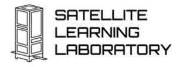
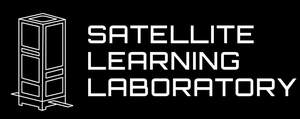

Trade Mark Journal No.2025/019 9 May 2025
UK00004181978 31 March 2025 (9,41,42)
Mark 1

Mark 2

- Class 9
- Satellites; Satellites for communication purposes; Satellites for scientific purposes; Satellite apparatus; Satellite navigational apparatus; Satellite transmission apparatus; Satellite receiving apparatus; Software; Embedded software; Teaching and instructional apparatus and instruments; Electronic instructional and teaching apparatus and instruments.
- Class 41
- Conducting of instructional, educational and training courses for young people and adults; Instructional and training services; Teaching by correspondence courses; Publication of educational and training guides; Providing courses of instruction; Teaching and training in business, industry and information technology; Provision of training courses for young people in preparation for vocations; Courses (Training -) relating to science; Education and training; Vocational education and training services; Education and instruction; Vocational training; Training and instruction; Vocational training courses (Provision of -); Training; Career and vocational training; Training courses; Vocational skills training (Provision of -); Providing courses of training; Provision of education courses; Provision of training courses; Courses (Training -) relating to research and development; Postgraduate training courses relating to engineering technology; Courses (Training -) relating to engineering; Conducting of educational courses in science; Provision of training courses for young people in preparation for careers; Organisation of training courses; Publication of educational teaching materials; Conducting of educational courses in engineering; Conducting instructional courses; Employment training; Organisation of courses using distance learning methods.
- Class 42
- Software engineering; Software development; Scientific research and development; Product research and development; Research and development services; Development (Research and -) of products; Research and development for others; Research and development of new products; Research and development services in connection with physics; Industrial analysis and research; Engineering research; Technological research; Scientific research and analysis; Consultancy in the field of technological research; Consultancy in the field of scientific research; Scientific research; Research and development of new products for others; Product research; Industrial analysis and research services; Industrial research and analysis services; Research relating to technology; Technical research; Consultancy in the field of industrial research; Scientific and industrial research; Research services; Industrial analyses and research services; Product development; Industrial research services; Industrial research; Industrial research and analysis; Research (Scientific -).
KISPE Ltd